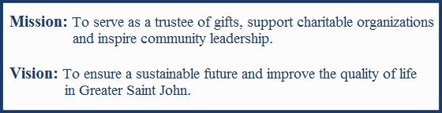

Propose to PEI or muniicpalities that they set aside 1% of their budget each year to set up endowments or to encourage endwment building in the third sector.
IDEAS
Centre for Community Philanthropy - Calgary
Match Grant Program for the Arts
Locals and visitors alike comment on the vigorous nature of the arts on PEI and, without doubt, the arts contribute to the quality of life of all Islanders. But the arts, everywhere, struggle. . Through the leadership and financial support of the Samuel and Saidye Bronfman Family Foundation and with marching support from both levels of government and the private sector, the program was implemented in PEI. .
The purpose of the IAHSP, implemented in May 2004, was to build stronger, more viable organizations in the non-profit arts and heritage community.with the goal of long term sustainability.
Managing a non-profit ‘arts’ organization is never an easy task with so many significant challenges - balancing financial necessities with artistic missions - while diligently keeping up with unknown year to year support from both public and private sources. The IAHS-Program however has made a real contribution toward mitigating many of those variables its client-organizations face with comprehensive work that boosts almost every facet of its board and staff, audience development, strategic planning and administrative functions, to name a few.
.CFPEI leadership continues as a partner with Canadian Heritage nd the arts community in helping to secure their future through building endowments as an additional income stream
Capacity Building
Vital Signs
ST. John Foundation

Endorsements
Winnipeg Literacy family literacy through libraries, and community centres funds support books, teacher wages, snacks,triaaning of volunteers
Environment
Newcomers
Visual Arts
Federal atching program
Neighbouthood Walsh
Neighbourhood watch
Capacity building
Winnipeg – over 100 charities hav e agency funds with Winnipeg
Winnipeg – community building funds
Vital signs a community report card,
1% for the planet
Victoria – will week in partnership with Public trustee, and Manitoba Bar association frwww presentation about the importance of having a will and the opportunity to make a charitable gift through a will
Testimonials